CCD 通信电路速成笔记
本笔记是本人电子科技大学格院大三《通信电路设计》课程的期末考试复习笔记, 遵循个人学习习惯与轨迹, 不保证严谨性和绝对正确性.
模拟电路里面有很多 abuse of notation (AoN) 和抽象命名和符号, 习惯就好.
Transistors 晶体管元件
Diode 二极管 ★☆☆☆☆
- Forward/Reverse Bias 正/反向偏置 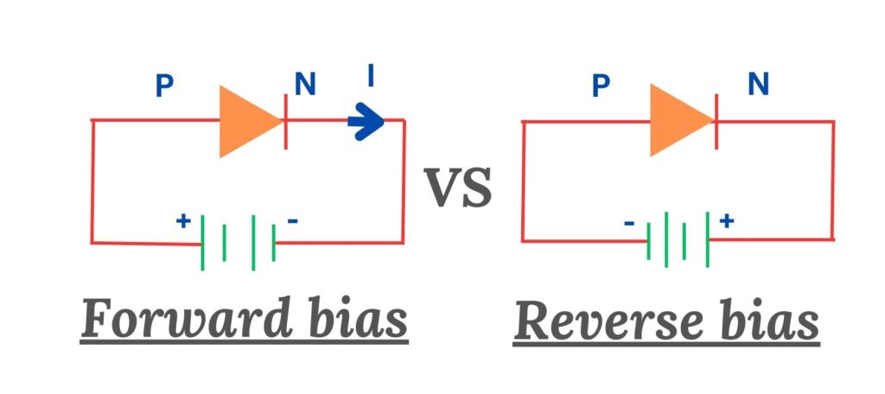
MOSFET 场效应管 ★☆☆☆☆
JFET 可近似看作 depletion-mode MOSFET (Figure 1), 因此省略 JFET 的讨论.
结构: Gate, Source, Drain 栅极, 源极, 漏极.
- S 源极指的是电子的源 而不是电流的源. D 漏极同理.
- 计算题一般假设 \(I_{\text{S}} = I_{\text{D}}\).
- JFET 的 GS 在 \(V_{\text{GS}}\) 下可能有极微弱的 leakage current1 \(I_{\text{GSS}}\), 造成 input resistance 输入电阻 (很大): \[R_{\text{in}} := \left\vert \frac{V_{\text{GS}}}{I_{\text{GSS}}} \right\vert\]
- MOSFET 由于有氧化层隔离, GS 无电流.
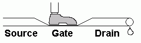
G 闸门, \(V_{\text{DS}}\) 水压, \(I_{\text{D}}\) 水流
MOSFET 分类:
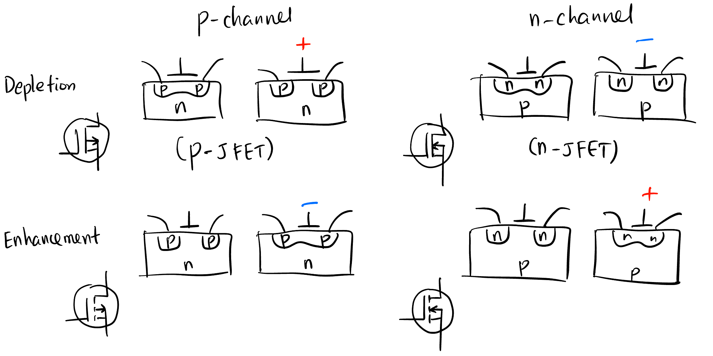Figure 1: 箭头 in 代表 n-channel - P/N channel 通道: 根据沟道类型 (不是 substrate 类型!), 空穴: P channel, 电子: N channel.
- Depletion/Enhancement mode 耗尽/增强型: 默认 (GSS, gate-source short) 闸门的状态, 导通: depletion, 不导通: enhancement (符号上断开).
- \(V_{\text{GS}}\) 控制闸门的方法是不一样的 (Figure 1):
- P-channel D Mode: 正电压 -> 吸引 n substrate 的电子 -> 中和掉 channel 的空穴 -> 截止
- N-channel D Mode: 负电压 -> 吸引 p substrate 的空穴 -> 中和掉 channel 的电子 -> 截止
- P-channel E Mode: 负电压 -> 排斥 n substrate 的电子 -> 增加 channel 的空穴 -> 导通
- N-channel E Mode: 正电压 -> 排斥 p substrate 的空穴 -> 增加 channel 的电子 -> 导通
特性:
- 以 S 源极为基准, 我们关心 \(V_{\text{GS}}, V_{\text{DS}}, I_{\text{D}}\) 三者的关系 (\(I_{\text{D}}\) 曲面)
- Q-point (Quiescent)2: 静态工作点, Figure 2 上的每个点都是 Q-point.
- 引入 Q-point 的原因是: 半导体元件在不同的输入变化频率下 即使输入的数值相同, 输出会有所差别. Q-point 代表这些点都是在输入变化很慢的情况下测出来的值, 即 DC 工作点、稳态值.
- 所以模拟电路有必要区分 DC 和 AC 分析, 他们是不一样的.
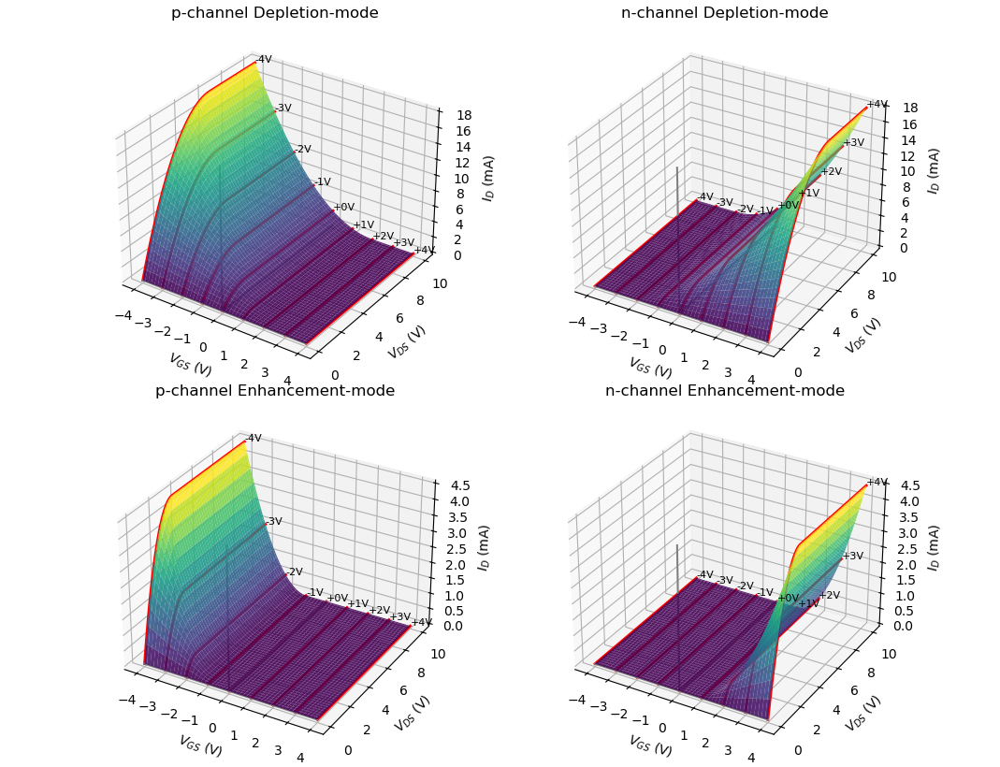Figure 2: \(I_{\text{D}}\) 曲面 - Drain curve 漏极特性曲线: 固定闸门 \(V_{\text{GS}}\) 后的 水压与水流的关系.
- Ohmic region 欧姆区: 相当于固定电阻. (改变闸门可以充当可变电阻)
- Active region 饱和区: 水流不变了.
- Breakdown region 击穿区: 水压太大, 水管坏了.
- Pinch-off 对应的点是抛物线.
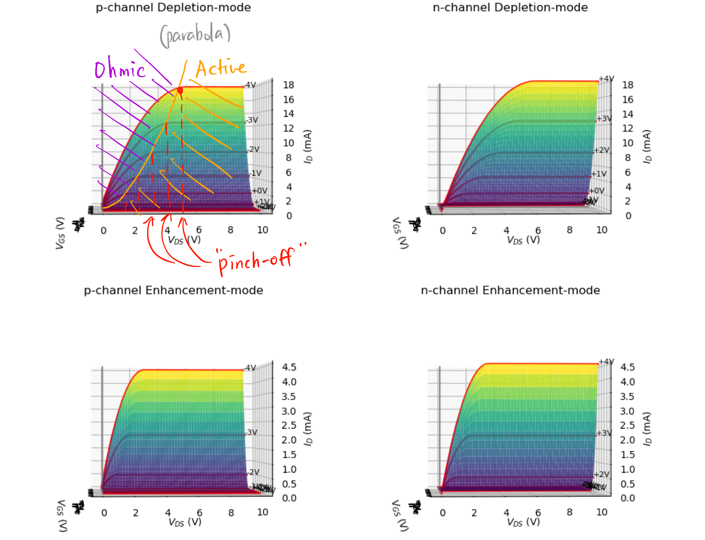
Drain curve 漏极特性曲线 - Transfer curve 转移特性曲线: 水压足够大时水流和闸门的关系 (\(I_{\text{D}}\) 曲面沿 \(V_{\text{DS}}\) 轴的投影).
- 抛物线 关系.
- 默认饱和电流 \(I_{\text{DSS}}\): Drain to Source current with gate Shorted.
- 跨导 \(g_m\): Drain curve 的斜率, 与闸门电压有关.
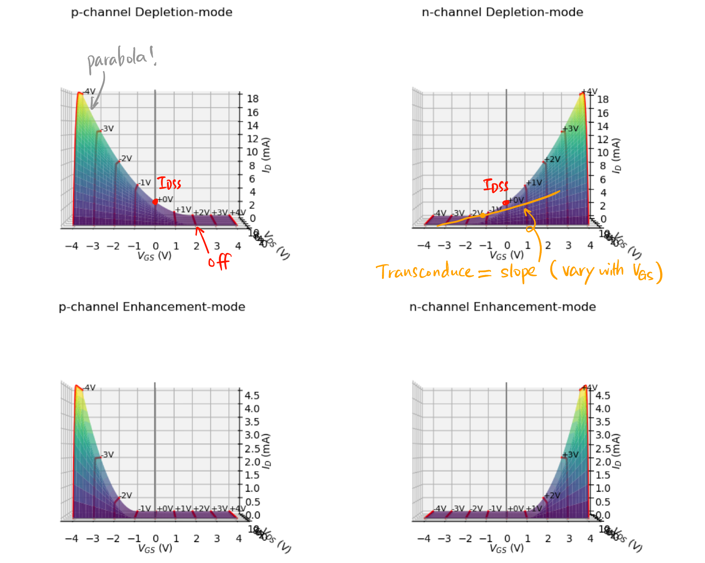
Transfer curve 转移特性曲线
BJT 三极管 ★★★★☆
结构 ★☆☆☆☆
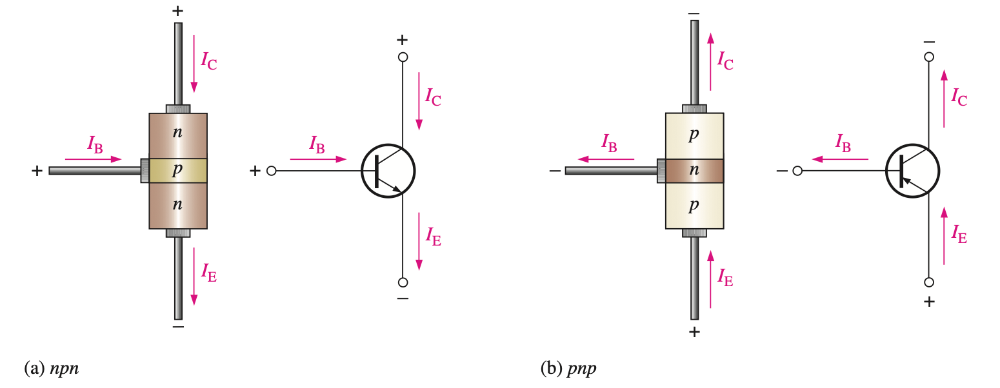
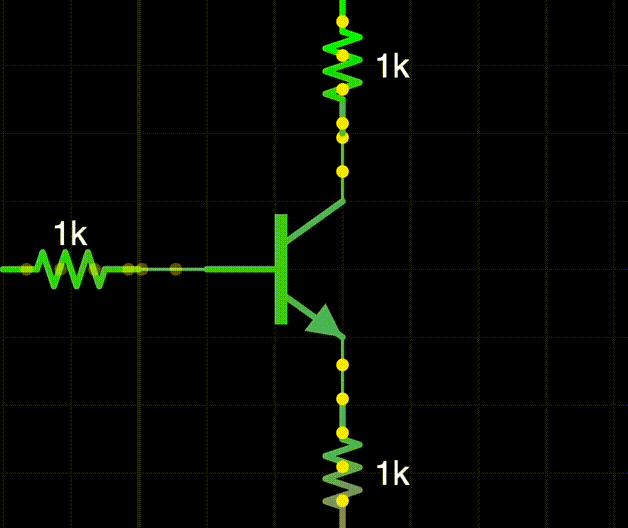
结构: Base, Collector, Emitter 基极, 集电极, 发射极.
- npn, pnp 两种, 因 doping 浓度不同而不对称 ! npn 性能更好.
模型及可观测参数
- r Parameters (resistance): \(r'_e\) (最重要), \(r'_b, r'_c, \alpha_{\text{ac}}, \beta_{\text{ac}}\)
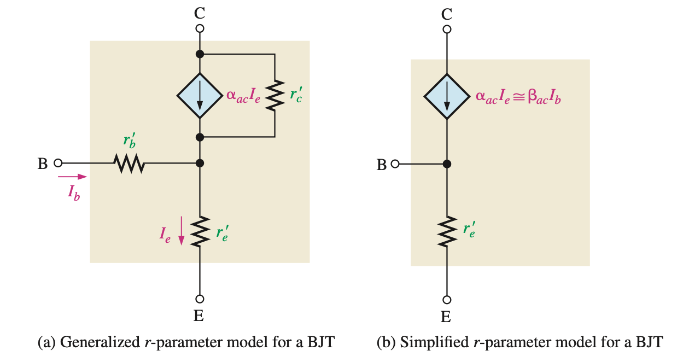Figure 3: 根据 \(r'_b \approx 0\) 和 \(r'_c \approx \infty\) 来简化模型 - h Parameters (hybrid): Omitted.
性质 ★★★★★
- AC & DC 下都有的性质:
- 箭头代表 总 (E) 电流 参考方向, 不一定是实际电流方向. 三者满足 KCL: \[\boxed{ I_{\text{E}} - I_{\text{C}} - I_{\text{B}} = 0} \tag{1}\]
- DC 工作模式性质:
- \(\alpha, \beta\) 参数:\[ \alpha_{\text{DC}} := \frac{I_{\text{C}}}{I_{\text{E}}} \approx 0.99, \quad h_{\text{FE}} = \boxed{\beta_{\text{DC}} := \frac{I_{\text{C}}}{I_{\text{B}}}} \approx 99\]
- B, E 可看作导通的二极管, PN结之间存在 barrier potential \(0.7 \text{ V}\), 因此我们约定3: \[\boxed{V_{\text{BE}} \approx 0.7 \text{ V}}\]
- 发射极动态电阻 \[\boxed{r'_e \approx \frac{25 \text{ mV}}{I_{\text{E}}}}\]
AC 工作模式性质:
- \(\beta\) 参数: \[ \beta_{\text{ac}} := \frac{\Delta I_{\text{C}}}{\Delta I_{\text{B}}}\]
- 造成 \(\beta_{\text{DC}} \neq \beta_{\text{ac}}\) 的原因是 \(I_{\text{C}}\)-\(I_{\text{B}}\) 关系是曲线:

- 造成 \(\beta_{\text{DC}} \neq \beta_{\text{ac}}\) 的原因是 \(I_{\text{C}}\)-\(I_{\text{B}}\) 关系是曲线:
- \(\beta\) 参数: \[ \beta_{\text{ac}} := \frac{\Delta I_{\text{C}}}{\Delta I_{\text{B}}}\]
Network Analysis 网络分析 ★★☆☆☆
Thevenin & Norton 定理
任何一个只有电压源、电流源和电阻的网络, 都可以等效为 一个有内阻的电压源 或 一个有内阻的电流源4.
\[ \boxed{ \begin{aligned} V_{\text{TH}} &= V_{\text{open}} \\ I_{\text{N}} &= I_{\text{short}} \\ R_{\text{TH}} &= R_{\text{N}} = \frac{V_{\text{open}}}{I_{\text{short}}} \\ \end{aligned} } \tag{2}\]

Input & Output Impedance 输入/输出阻抗
一个线性网络作为负载时一定可以等效成一个电阻 (输入阻抗), 作为电源时一定可以等效成一个非理想电压源或电流源 (内阻就是输出阻抗).
- \(R_{\text{in}}\) 就是改网络作为负载时两端的电压和电流之比.
Amplifier Circuit 放大电路分析 ★★★★☆
一个放大电路对 DC 和 AC 的作用是单独的, 我们先分开分析, 实际上的情况是两个分析结果的叠加!
DC & AC 分析纲领
DC 和 AC 的情况下, 放大电路的等效电路是不一样的.
我们只需要考虑等效电路, 电容和电感在等效电路中是不存在的.
- DC 分析:
电容开路, 电感短路.
画 Thevenin 等效电路
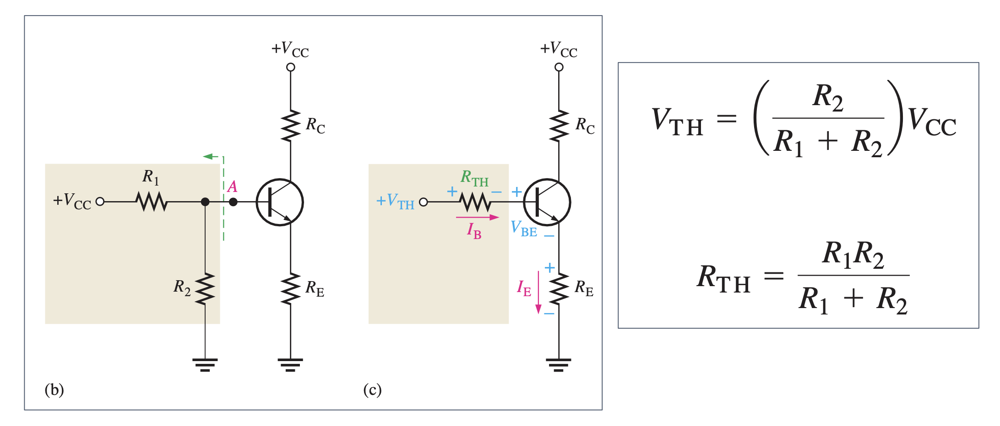Figure 4: DC等效电路 及其Thevenin等效
- AC 分析:
- 电容短路, 电感开路.
- \(V_{\text{CC}}\) 相当于接地 (任何不变的信号都相当于接地)
- Bypass Capacitor: 与某个电阻 \(R\) 并联的电容, 使得交流信号在至少 \(f_{\min}\) 频率下看起来无阻抗, \(C\) 必须足够大 (\(X_C\) 必须足够小): \[\boxed{X_C \le \frac{R}{10}}\]
- DC 分析:
将等效电路中的 BJT 换成 Figure 3 (b) 中的模型, 然后当作正常电路分析即可.
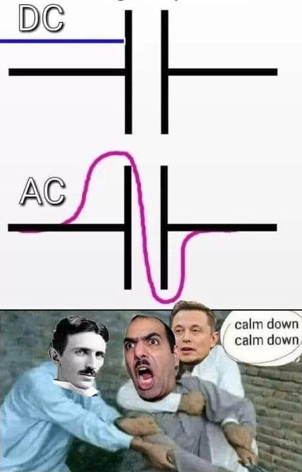
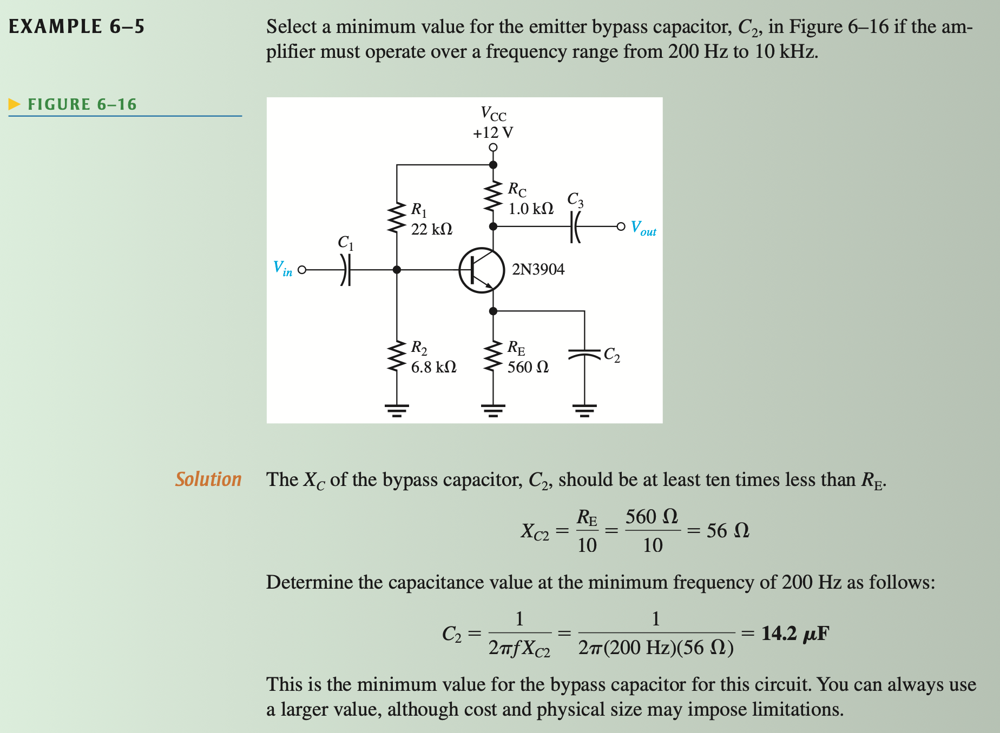